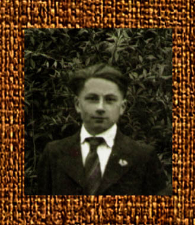
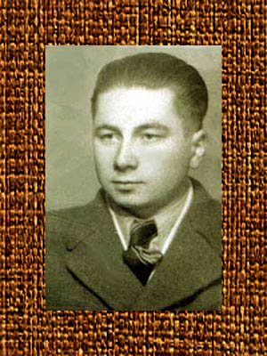
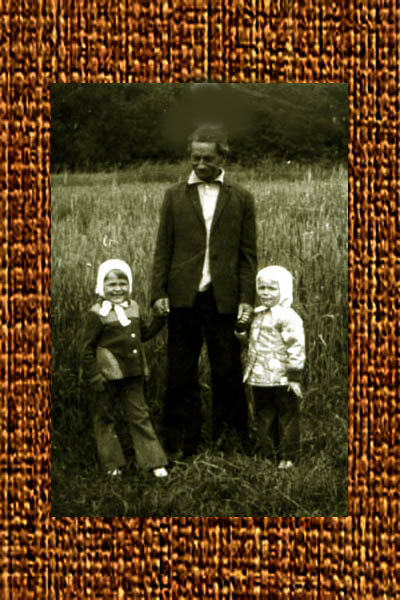
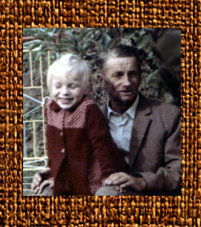
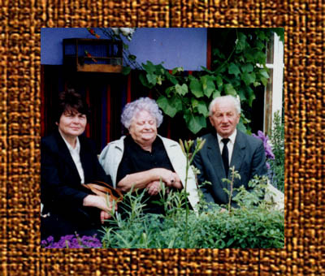
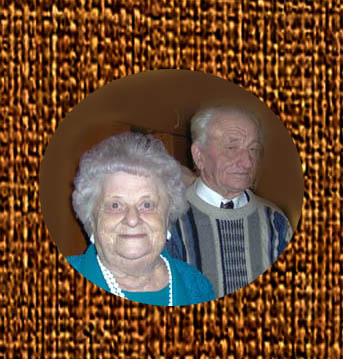
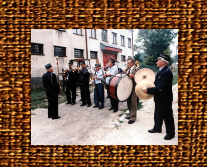
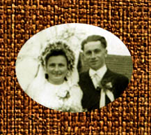
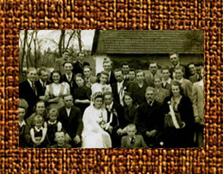
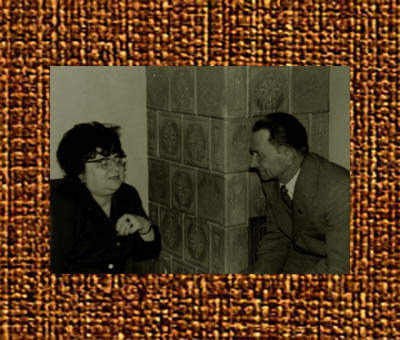

Adam

Adam

Irena (z prawej) z chrześnicą Zdzisławą i Kamilą.

Adam z wnuczkami- Renatą i Małgorzatą.

Adam z wnuczką Małgorzatą.

Adam z siostrą Kamilą i córką Zofią. Moczydło 2003 rok.

Adam z siostrą Kamilą.

Adam (pierwszy z prawej) gra z orkiestrą.
Adam Sawicki urodził się 4.03.1924 roku w Bejscach. Po śmierci ojca, w 1933 roku, stał się jedynym mężczyzną w gospodarstwie, choć miał wtedy zaledwie 9 lat. Wkrótce jednak jego matka, Hanna Sawicka, wyszła za mąż za Stanisława Niziołka. Gospodarowali w Bejscach kilkanaście lat, następnie Niziołkowie przeprowadzili się na Ziemie Odzyskane, wpierw do nadmorskiej wsi Kopań, a następnie do uroczego miasteczka Czaplinek nad jeziorem Drawsko.
Małżonkowie zabrali małego Stasia, ich syna, oraz młodziutką Annę, córkę Hanny ze związku ze Stanisławem Sawickim.
Adam zrozumiał, że na ojcowiźnie zostanie sam, albowiem druga siostra, Kamila, mieszkała już u ciotek w Krakowie. Postanowił się ożenić.

Irena i Adam.
Jego wybranką była Irena Jarkiewicz z Krzczonowa. Ślub, zgodnie z tradycją, odbył się w miejscu zamieszkania panny młodej. Tam też wyprawiono wesele. Przybyli członkowie obu licznych rodzin.

Wesele Ireny i Adama.
Irena i Adam przez całe życie gospodarowali w Bejscach. Początkowo zamieszkali w domu rodzinnym Adama, ale w 1960 roku zdarzyła się wielka rodzinna tragedia. Dom spłonął. Stało się to pod nieobecność Adama. Wraz z synem Zdzisławem był wtedy u siostry w Krakowie. Krótki telegram: "Adam przyjeżdżaj. Dom spalony." na wiele lat odmienił spokojne życie małżonków.
Trzeba był wznieść prowizoryczny budynek, pomyślany jako późniejsza obora. Pieniędzy starczyło zaledwie na dwie izdebki - kuchnię i pokoik. Tam wyrosło troje dzieci - Zofia, Stanisław i Zdzisław. Z czasem udało się zaadaptować jeszcze jedno pomieszczenie, niepotrzebną już obórkę. Zjawiła się też łazienka, ubikacja i bieżąca woda. Przez całe lata bowiem wodę czarpano ze stoczka, czyli żwawego źródełka płynącego na samym dole pagórka, na jakim wznosił się bejski dom Sawickich.
Bejska woda ze stoczka miała wyjątkowy smak. Zawsze była chłodna, nadzwyczaj smaczna i bogata w minerały. Jako dzieci piliśmy ją wprost z metalowej rurki, jaką zainstalowano, by łatwiej było nalać ją do wiader.
Ale to, co dla gości było bejską atrakcją, dla domowników z czasem stało się udręką. Trzeba było bowiem dziennie tych wiader z wodą przenieść z dołu do góry, dość stromym zboczem, kilkanaście razy dziennie! Woda była potrzebna nie tylko w kuchni. Piły ją przecież także liczne wtedy gospodarskie zwierzęta.
Przez wiele lat główny dochód mieszkańcy Bejsc czerpali ze sprzedaży tytoniu. Niemal każdy miał obok domu suszarnię liści. Można było suszyć tam także śliwki, słynne bejskie węgierki i damaszki.
Sad Sawickich, założony jeszcze przez ojca Adama, Stanisława Sawickiego, a pewnie i w początkach przez dziadka, obfitował w niezwykle smaczne owoce. Ale każdego roku największym rarytasem były powidła.

Adam z siostrą Kamilą.
Dom Sawickich, jak w przeszłości, i teraz skupiał rodzinę i znajomych. Choć był niewielki, a gospodarze nie zaliczali się do nazbyt bogatych, przy stole zawsze można było spotkać jakiegoś gościa i nikt nigdy nie zastał pustych talerzy!
Irena była kobietą pracowitą, wytrwałą i zdrową jak rydz. Przez całe życie omijała lekarzy i nigdy na nic nie chorowała. Dlatego wielkim szokiem było dla wszystkich bliskich, gdy nagle, w końcu sierpnia 1998 roku, zachorowała. Niestety, była to nieuleczalna choroba. Odeszła od nas 22.02.1999 roku. Pochowano ją na Bejskim cmentarzu, w rodzinnym grobowcu Sawickich.
Owdowialy Adam musiał radzić sobie sam. Mimo traumy, nie tracił swej naturalnej radości życia, serdeczności i życzliwości. Jego dom jak zawsze pełen był sąsiadów, znajomych i rodziny. Hodował kury i uprawiał ogród warzywny, chwaląc się pięknymi okazami pomidorów, ogórków, kapust, marchwi i całej reszty. Miał też kwiaty ozdobne, kochał dalie, a one kochały jego, bo każdego roku pięknie mu kwitły.
Adam również nie skarżył się na żadnego dolegliwości. Był jak zwykle aktywny, między innymi grał w miejscowej orkiestrze strażackiej, a także uczestniczył w pisaniu książki o dziejach Bejsc. Ciekawe, że mimo nadzwyczajnej komunikatywności i ciekawości świata, niechętnie opuszczał swoje Bejsce. Jeśli już los zmuszał do jakiejś eskapady, starał się najszybciej jak można powrócić do domu. Bejsce były jego jedynym i ukochanym miejscem do życia.
Jak zwykle bywa z chorobami, przychodzą niespodziewanie. W końcu listopada zaniemógł, trafił do szpitala, a już 31 stycznia odszedł. Trzymałam dłoń na jego sercu. I czułam, jak rytm zwalnia. Mój ukochany wujek. Tak bardzo go kochałam.